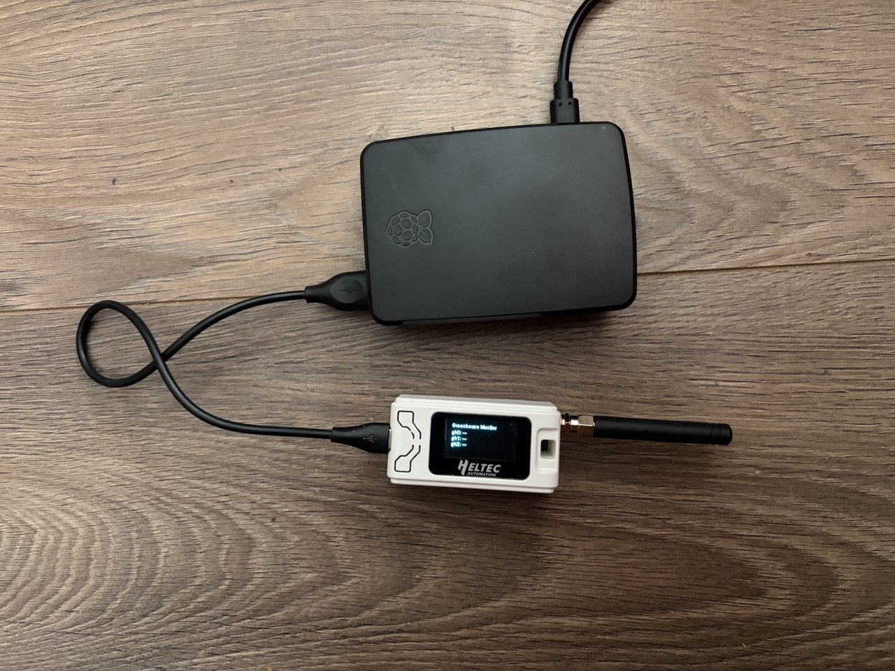
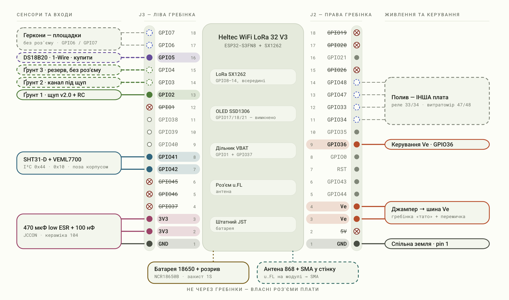
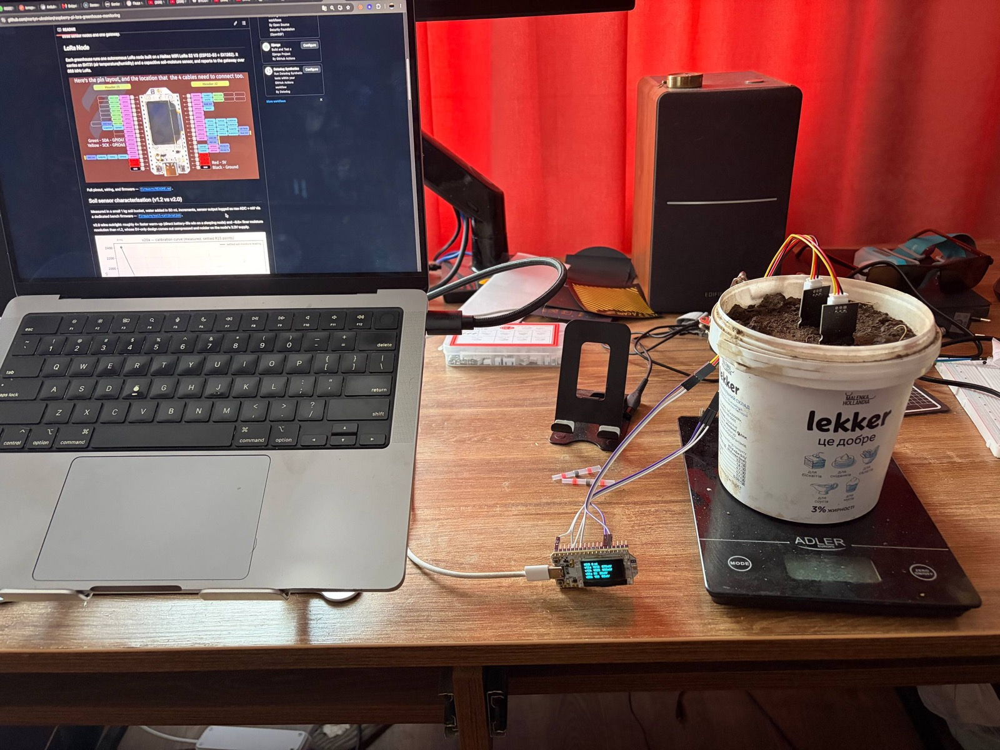
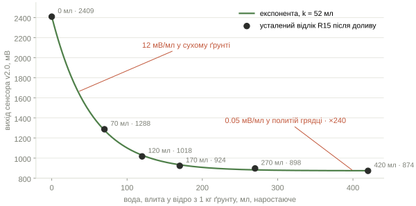

Задача
LoRa P2P, не LoRaWAN: кілька теплиць і одна база, власний протокол, без чужого сервера. Вузол на батареї і спить, шлюз живиться від Pi. Саме тому Wi-Fi є у шлюза і нема у вузла.
| обрано | замість | чому |
|---|---|---|
| 868 МГц | 433 | легальна LoRa-частота для України та ЄС |
| ємнісний щуп ґрунту v2.0 | резистивний | резистивний кородує за тижні; для системи, що керує водою, це небезпечно |
| SHT31-D по I²C | DHT11 / DHT22 | комерційна надійність, цифрова шина |
| Heltec WiFi LoRa 32 V3 | V4 | зріліша платформа; сонячний конектор у фазі 1 не потрібен |
| Raspberry Pi 5, 2 ГБ | вживаний міні-ПК | офіційний комплект прибрав різницю в ціні |
| LoRa P2P | LoRaWAN | надлишковий для «кілька теплиць + база» |
· ESP32-S3 + SX1262 · OLED · u.FL
SHT31-D ×4 · повітря
щупи ґрунту ×6 · v1.2 і v2.0
NCR18650B ×2 · 3400 мА·год · TP4056 + захист 1S
антена 868 · SMA
Raspberry Pi 5 + корпус
витратоміри · клапан · реле · INA226 ×2 · на потім

шлюз · Pi 5 + Heltec V3| куди пішли ≈13 400 грн | грн |
|---|---|
| Raspberry Pi 5 + корпус | 4 870 |
| 3× Heltec V3 | 2 798 |
| інструмент і витратні | ≈2 000 |
| датчики: SHT31, ґрунт, витратоміри, клапан, реле | ≈1 500 |
| монтаж і обв'язка | ≈900 |
| живлення: 18650, тримачі, БЖ 12 В | ≈430 |

клік · на весь екран1 кг ґрунту, кухонні ваги, вода порціями по 50 мл. Окрема стендова прошивка пише raw ADC і мВ по USB. Два екземпляри кожної версії, той самий канал, та сама ямка, тож різниця може йти лише від сенсора.
| v1.2 | v2.0 | ||
|---|---|---|---|
| повітря | 2229 мВ | 2721 мВ | розмах ×2.4, і це нічого не значить |
| сухий ґрунт | 2101 мВ | 2409 мВ | |
| шум σ | 2.9 мВ | 1.05 мВ | у 2.8 раза тихіше |
| прогрів T±10 | 0.4 с | 0.1 с | у 4 рази швидше |
| чутливість до води | 12.6 мВ/мл | 12.1 мВ/мл | однакова |

відро 1 кг · ваги · два щупи · USB